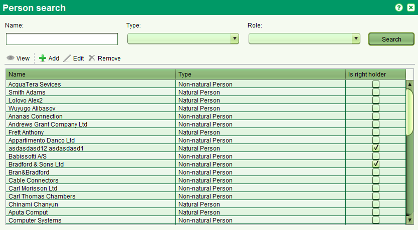

You can add new persons by clicking
You can also remove an existing person by selecting it and clicking
For just viewing the person details screen you can select it and click , unless this is application's agent or property's owner or right holder.
The Persons screen allows you to find persons (parties) for adding, editing, removing or just viewing. It can be accessed selecting

You can search by any combination of Name, Type and Role.
The Name also supports partial and full matching.
You can add new persons by clicking
 or editing an existing one by selecting it and clicking
Both of them will open the Persons Details screen allowing you to enter in details for an individual or an entity.
Once the necessary party details have been entered, click Save (Save & Close).
or editing an existing one by selecting it and clicking
Both of them will open the Persons Details screen allowing you to enter in details for an individual or an entity.
Once the necessary party details have been entered, click Save (Save & Close).
You can also remove an existing person by selecting it and clicking
 , unless this is application's agent or property's owner or right holder.
, unless this is application's agent or property's owner or right holder.
For just viewing the person details screen you can select it and click
, unless this is application's agent or property's owner or right holder.
Also See